Equipamentos
O que levar para a caçada: Warframes, armas, Operador e Amp.
Warframes
Trinity/Prime
Um dos melhores Warframes para iniciantes nas caçadas. A quarta habilidade "Benção" é capaz de curar aliados, o que inclue as Iscas de Eidolon, além de oferecer 75% de redução de dano recebido. Habilidades do Helminth podem ser colocadas para que ela também ofereça algum buff para as armas.
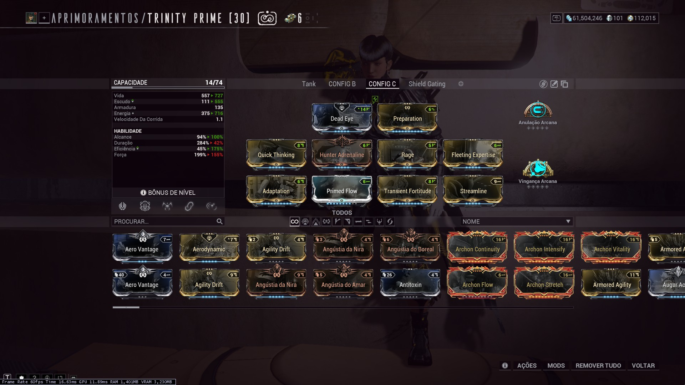
Volt/Prime
O melhor Warframe em termos de potencial de dano causado aos Eidolons, porém com nenhuma habilidade de suporte.
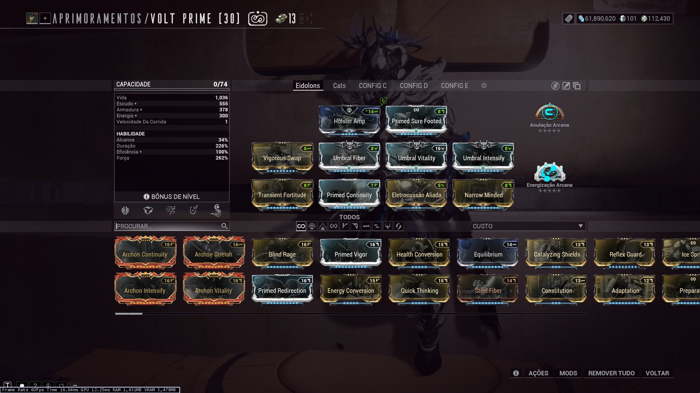
Armas Primárias
Lanka ou Rubico/Prime
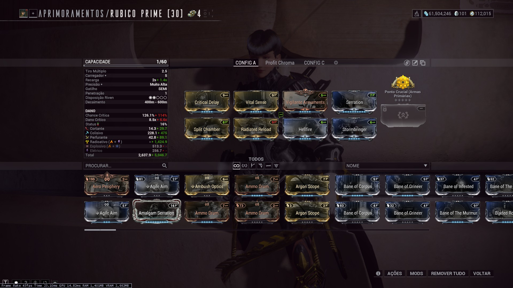
Armas Secundárias
A gosto.
Pandero/Prime
Vermisplicer (Kitgun)
Empunhadura: Gibber, Tambor: Vermisplicer, Carregador: Splat
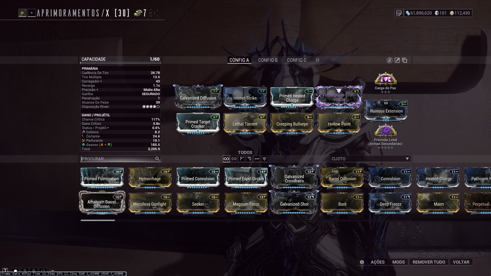
Armas Brancas
Lâmina-Armas
As armas brancas não são muito utilizadas nem essenciais nas caçadas de Eidolons, mas existe uma categoria principal de armas brancas que tem sua relevância para caçadas, e são as Lâminas-Armas. Sua função principal é remover a armadura dos Eidolons, o que é possível graças ao mod Shattering Impact. A remoção completa da armadura é possível e benéfica, visto que a armadura não altera mais a fraqueza dos inimigos como antigamente..
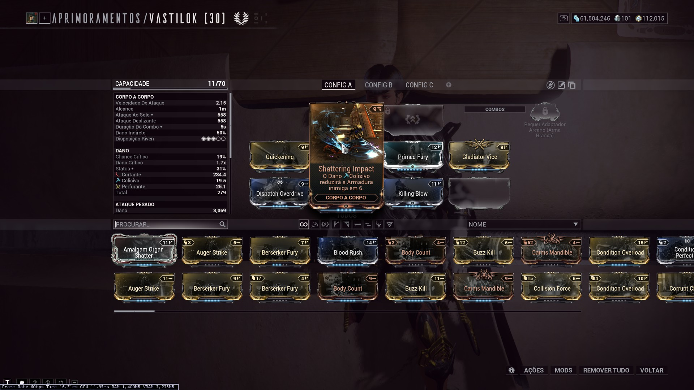
Além do Shattering Impact, nada mais é necessário. Mods de velocidade de ataque são interessantes, mas longe de necessários.
Armas da categoria: Redeemer/Prime, Sarpa, Stropha e Vastilok
Operador
Amps
As Amps são componentes modulares que atuam como a "arma" do Operador. Quanto melhor a Amp, mais fácil é a remoção do escudo dos Eidolons, e por consequência, mais fácil e rápido se torna a caçada.
Amps são modulares, ou seja, são necessárias três partes para compor uma Amp: Prisma, Ligação e Amarra. Cada componente modifica a Amp final de alguma forma: A Prisma corresponde ao tipo de disparo primário, a Ligação configura o disparo secundário e a Amarra afeta os status finais da Amp.
Em diversos fóruns e discussões, a comunidade adotou um sistema numérico para identificar as Amps: É comum encontrar referências como "Amp 1-7-7", ou "Amp 3-4-7". A tabela abaixo ilustra o significado destes números.
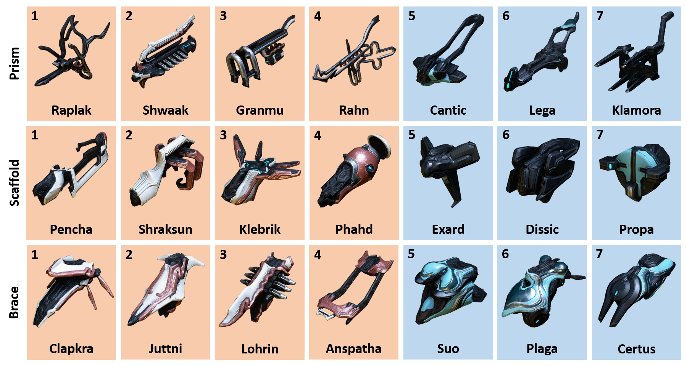
As cores de fundo dos componentes indicam a origem da componente. Fundo laranja indica que a componente é obtida com Onkko Quill, do sindicato Os Plumas, enquanto componentes com fundo azul são obtidas com a Little Duck, do sindicato Vox Solaris. Com esta tabela, é fácil ver que a Amp "1-7-7" corresponde a uma Amp com Prisma Raplak, Ligação Propa e Amarra Certus.
Após obter as componentes da Amp, ela pode ser montada em qualquer um dos dois NPCs mencionados acima. Ela deve ser evoluída para o nível 30 uma vez, onde então é desbloqueada a opção de doura-las. Amps douradas tem seus status amplificados, aumentando seu dano. Essa funcionalidade pode ser acessada em qualquer um dos NPCs mencionados, sob o menu de "Outros Serviços", e necessita 5000 pontos de reputação com o sindicato de escolha.
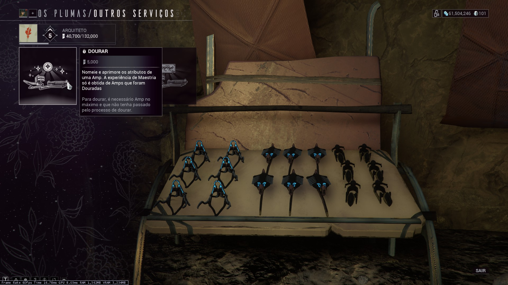
As componentes disponíveis com Os Plumas e Vox Solaris são liberadas nos Ranks de sindicatos 1-4
Algumas escolhas populares de Amps para caçadas de Eidolons:
| "Nome" | Prisma | Ligação | Amarra | Comentários |
|---|---|---|---|---|
| 1-1-1 | Raplak | Pencha | Clapkra | A Amp mais básica possível. É uma melhoria comparada a Sirocco, mas deve ser trocada o quanto antes. |
| 1-7-7 | Raplak | Propa | Certus | |
| 5-7-7 | Cantic | Propa | Certus | Disparo primário são três projéteis, e o secundário é um disco que explode em área após alguns segundos do disparo. |
| 7-7-7 | Klamora | Propa | Certus | Disparo primário é um raio esférico de baixo alcance, e o secundário é um disco que explode em área após alguns segundos do disparo. |
| 5-4-7 | Cantic | Phahd | Certus | Disparo primário são três projéteis, e o secundário é um disco com ricochete. Excelente não só contra Eidolons, mas contra Thrax e em geral. |
De modo geral, a Amarra Certus é a única peça vista como melhor ou essencial. Os tipos de disparo são a gosto, visto que arcanos e escola de foco são os maiores responsáveis pelo dano causado pela Amp.
Foco
A melhor escola de foco para caçar Eidolons é Madurai. A primeira habilidade amplifica muito o dano causado pela Amp, e a segunda habilidade também é efetiva na amplificação do dano causado.
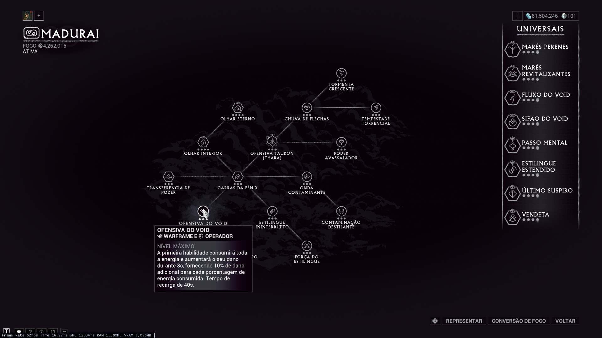
Outra opção é a Unairu, por conta da passiva Espírito de Unairu. A parte negativa desta passiva é a necessidade de realmente coletar o Espírito gerado para ganhar a amplificação de dano. Esta opção pode ser útil no começo, pois o restante da árvore de Unairu tem benefícios de sobrevivência para o Operador. Entretanto, ao desbloquear as passivas globais das escolas de foco, este não é um fator tão relevante, e o dano oferecido pela Madurai é muito maior.
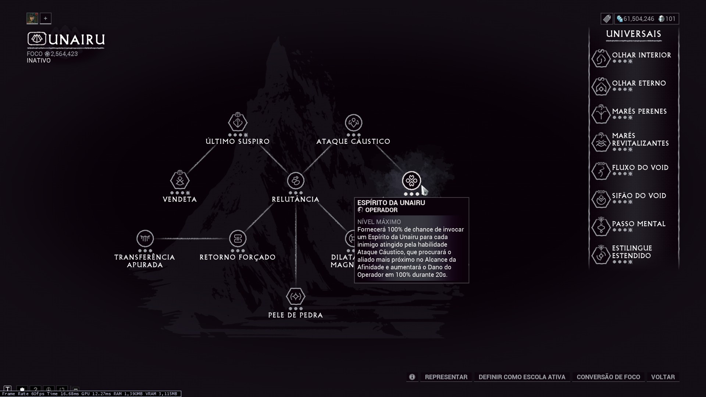
Arcanos
Esta configuração oferece grande sobrevivência ao operador e o maior dano possível para a Amp utilizando a escola de foco Madurai. Arcanos do operador podem ser trocados de acordo com o conforto.
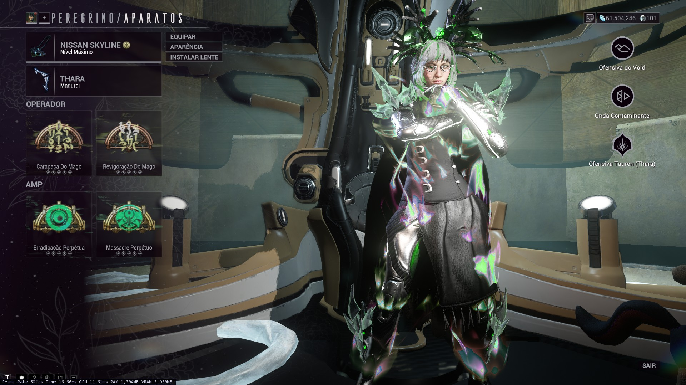
Outros arcanos para Amp são viáveis, porém inferiores em dano. Arcanos viáveis incluem: Ataque Virtuoso, Aparição Virtuosa e Fúria Virtuosa. Estes arcanos, bem como os de sobrevivência para o operador, são comprados com Os Plumas. Já os melhores arcanos em termos de dano para a Amp são obtidos como drop de Thrax em missões de Zariman, ou comprados com Os Indomáveis
Artefatos Tektolistas
É um item mais avançado do jogo, mas também oferece benefícios significativos para a Amp.
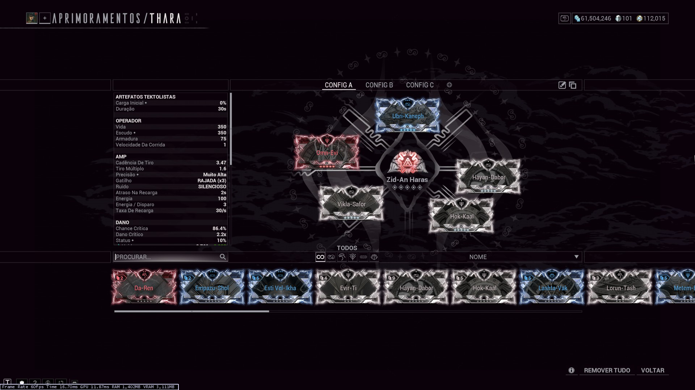
Archwing
A única Archwing relevante para caçadas de Eidolons é a Itzal. Isto se deve a sua habilidade Compressão Cósmica, que puxa objetos próximos, sendo útil na coleta de recursos após a captura ou eliminação de um Eidolon.
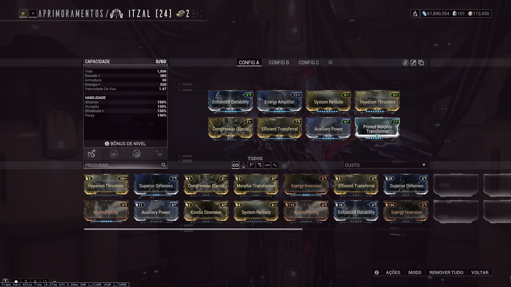
Esta build, porém, pode ser reduzida e simplificada. Os mods relevantes são de velocidade de vôo, eficiência de habilidade, e vida/energia.
Necramech
O Nechramech Voidrig pode ser utilizado como uma alternativa as armas para causar dano nas sinóvias e aos Eidolons. O investimento necessário para que sua arma exaltada Arquebex cause dano significativo, bem como para sua própria sobrevivência, não justificam apenas para o foco em Eidolons. Entretanto, é uma opção.
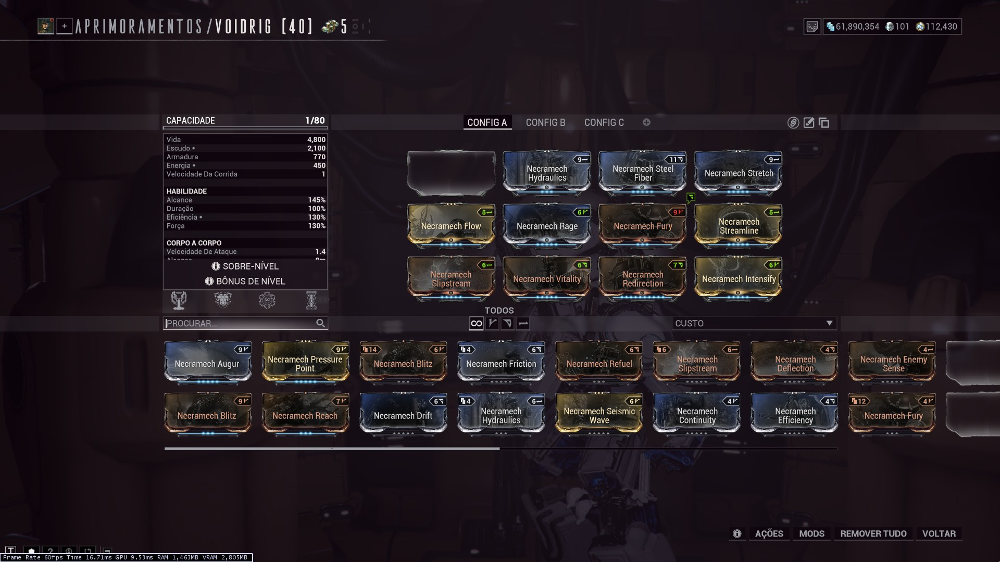
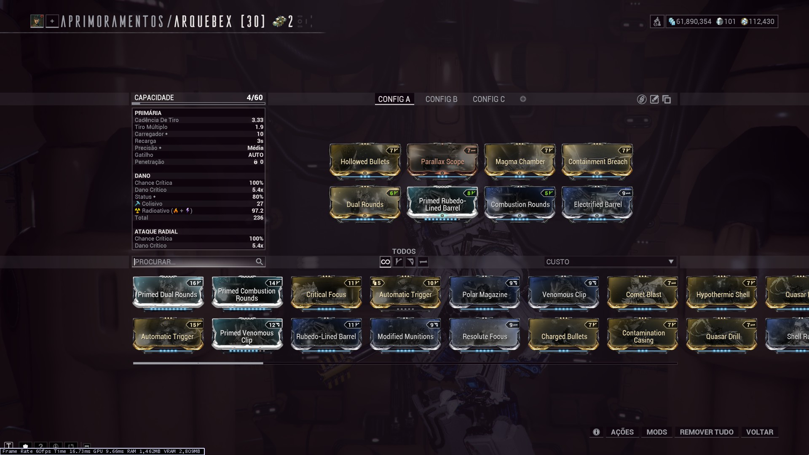